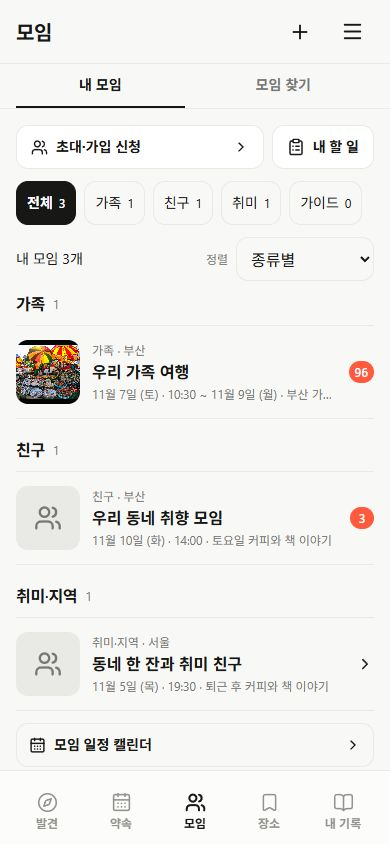

이용자의 세 가지 시작점
- 혼자: 장소 저장 → 개인 여행·동선 → 여행기.
- 아는 사람과: 식사 약속·가족여행 → 초대 → 준비·대화.
- 새로운 사람과: 지역·관심 활동 탐색 → 가입·참가 선택 → 지속 모임.
SPOTLOG · 방향성 및 AI 활용 검토
개인 장소 저장과 여행을 유지하면서, 가족·친구의 약속과 새로운 모임 참여까지 연결합니다. 모임 분류, 지역 기준, AI의 시작점을 함께 정리합니다.
계획 만들기 · 여행 만들기 · 별도 검수 데이터로 보기
문장 → 조건 확인 → 공개 등록 장소 최대 3안 → 사진·상세/교체/추가/제외 → 확인 저장. 개인 일정·기존 모임의 새 약속·모임 없는 한 번의 약속을 지원합니다. 새 모임의 관심사·가입 안내·첫 활동 아이디어와 장소/날짜 투표·준비 항목·직접 쓴 후기 연결도 반영했습니다.
현재는 규칙으로 문장의 명시 조건을 읽고 등록 자료를 비교합니다. 실제 LLM·날씨·가격·예약·도로 이동 시간은 연결 전입니다. 중간 지역과 공동 가능 시간 자동 계산, 대화에서 결정 자동 추출, 안내문 가져오기는 후속 구현입니다. 기존 일정·고정 예약·회원 참석을 자동 변경하지 않습니다.
첫 화면의 고정 단풍 예시와 네 가지 유형 격자를 없앴습니다. 자유 문장 입력 후 약속·일정과 지속 모임을 구분하고, 하루 일정 또는 여러 DAY 여행과 16개 복수 관심사를 확인합니다. 맞는 등록 장소가 없으면 직접 장소 미정 초안을 선택할 수 있습니다.
계획 도움과 약속 도우미는 대화방의 도우미 진입으로 정리했습니다. 투표·준비·새 약속·공지는 해당 방에 원본을 참조하는 카드로 남고, 카드와 준비 화면에서 같은 투표·완료 상태를 봅니다. 모임 전체와 개별 약속방의 자료는 분리합니다. 상단 진행 항목에서 다시 찾을 수 있으며 새 카드로 이동해도 상단 메뉴는 유지됩니다.
모임 홈은 다음 약속·최근 이야기·모임 정보의 세 구역으로 나눴습니다. 화면 이동은 밑줄 탭, 생성은 검정 버튼, 정보 조회는 목록으로 구분하고 일반 도구의 AI 강조 모양을 제거했습니다.
모임 홈 검수 · 전체 대화 검수 · 대화방 도우미 검수
815개 자동 테스트와 웹 빌드 통과. 320·390·460px의 홈·생성·도우미·채팅을 확인했습니다. 검수 링크는 페이지 메모리만 사용하며 새로 열면 초기 자료로 시작합니다. 실제 LLM·실시간 자료·다른 기기 전달은 연결 전입니다. 아래의 기존 시나리오는 기획 예시이며 실제 구현은 위 링크에서 확인합니다. 로컬만 변경했으며 Git 업로드·배포는 하지 않았습니다.
01 · 방향
장소·맛집·명소를 발견하고, 만남이나 여행을 계획하고, 대화와 준비를 거쳐 실행한 뒤 기록을 남깁니다. 지속 모임은 여러 활동을 이어주는 관계이고, 여행은 DAY·숙소·이동 동선을 가진 핵심 활동입니다.
내 모임 분류에 이어 등록 장소 기반 계획 만들기와 모임 개설·계획 도움 화면을 로컬에 반영했습니다. 실제 LLM·실시간 자료 연결과 모임 찾기 체계는 후속 범위입니다. 아래 문장별 예시는 기획 설명용이며 실제 앱은 위 링크에서 확인할 수 있습니다.
02 · 실제 소스 확인
| 영역 | 현재 상태 | 필요한 보완 |
|---|---|---|
| 내 모임 | 가족·친구·취미·가이드 데이터는 있었지만 종류 이름만 표시. | 로컬 반영: 종류별 묶음·필터·개수, 전체 약속순·안 읽은 순·이름순. 상세 왕복 시 선택 유지. 보관 모임 접근 유지. |
| 관심사 | 실제 16개. 기본 8개와 더보기 8개가 존재. | 운동 → 러닝·배드민턴처럼 세부 관심사를 추가하고 검색어와 연결. |
| 지역 | 도시·동네 선택은 있으나 공개 만남에도 모임의 지역을 표시. | 모임 기반 지역 / 이번 활동 지역 / 여행 목적지를 분리. |
| 참여 방식 | 초보 환영·논알콜 등은 주로 소개 문장에 있음. | 운영자가 명시한 조건을 태그·필터로 제공. |
| AI | 기존 8개 보조 모드에 등록 장소 기반 계획 만들기·모임 개설·계획 도움을 추가. 실제 LLM·자동 번역 미연결. | 생성 첫 단계에서 의도 해석과 실제 장소 후보를 제시하고, 결정·준비로 연결. |

03 · 분류와 지역
| 구분 | 무엇을 뜻하는가 | 예시와 노출 |
|---|---|---|
| 관계·운영 형태 | 내가 누구와 관계를 이어가는가 | 가족 / 친구 / 취미 모임 / 가이드. 내 모임 관리에 사용. |
| 활동 대분류 | 무엇을 함께 하는가 | 맛집·카페 / 산책·자연 / 운동 / 문화·취미 / 배움·교류 / 여행·나들이 / 가족·반려생활 / 이웃·친목. |
| 세부 관심사 | 같은 대분류 안에서 무엇을 원하는가 | 운동: 러닝·배드민턴·볼링. 문화: 전시·공연·사진. 여행: 당일·숙박·계절 나들이. 세부 목록은 전체 보기에서 선택. |
| 지역 세 가지 | 주로 모이는 동네 / 이번 만남의 지역 / 여행 목적지 | 예: 주 활동 부산 수영구 → 이번 여행 경남. ‘부산 모임’과 ‘경남에서 하는 활동’을 각각 검색 가능. |
| 참여 방식 | 참여자가 미리 확인할 운영 조건 | 처음 참여 환영 / 소규모 / 한 번 참여 / 정기 활동 / 퇴근 후 / 주말 / 아이 동반 / 음주 없음. 운영자 입력 기준. |
| 공개·참석 | 누가 안내와 내용을 볼 수 있고 실제로 참석하는가 | 모집 공개 / 초대 전용, 가입 승인 / 참가 선택을 분리. 가족이라는 이유로 공개하거나 자동 참석 처리하지 않음. |
위에는 활동 지역＋관심사＋검색을 둡니다. 그 아래 ‘꾸준히 함께할 모임 / 이번에 참여할 만남’을 선택합니다. 날짜·세부 관심사·참여 방식은 필터 한 곳에서 설정하고 적용 조건을 요약합니다.
거리순·‘내 주변’ 표시는 실제 위치 기준이 있을 때 제공합니다. 현재는 지역·동네 선택 방식이며 GPS 반경 검색이 연결된 상태가 아닙니다.
조용한 대화, 활동적인 일정, 초보 환영, 소규모처럼 사람이 원하는 활동 방식을 명시합니다. 대화를 몰래 분석해 성격·궁합·인기도를 붙이지 않습니다.
가족 모임도 여행·맛집·독서 관심사를 가질 수 있습니다. 관계 분류와 활동 관심사는 독립적으로 저장해야 합니다.
이번 만남 · 광안동 / 날짜·참여 조건 확인
커피·독서 · 소규모 · 가입 신청여행 후보·출발일을 함께 정하는 단계
당일 나들이 · 초보 환영 · 상세 안내 확인초기에는 기존 16개 관심사를 연결하고 새 세부 항목을 추가하는 방식으로 확장합니다. 기존 ID와 회원의 저장·가입 자료를 자동 재분류하거나 삭제하지 않습니다. 실제 샘플은 관심사·지역·초안/모집/마감 상태가 다양하도록 별도로 구성해야 합니다.
04 · AI의 첫 역할
모임 소개를 만들 때와 이번에 할 활동을 만들 때 필요한 도움은 다릅니다. 한 문장을 입력한 뒤, 한 번의 약속·여행인지 지속 모임인지 확인하고 필요한 조건만 더 묻습니다.
“카페 가자”에서도 음식점·카페를 독립적으로 추천하고 약속을 만들 수 있어야 합니다. “단풍 보러 가자”는 출발 지역·날짜·보행량·교통수단에 따라 명소와 식사·휴식 구간을 묶습니다. 여행이면 숙소와 DAY 구성으로 확장합니다.
장소 ID·주소·영업 상태는 원본 DB, 분위기·설명·방문 팁은 승인된 검색 자료를 사용합니다. 단풍 절정·현재 날씨·영업시간·예약 가능 여부·도로 이동시간은 최신 연결 근거가 필요합니다. 정보가 없으면 확인 필요로 표시하고 조건을 만족한다고 단정하지 않습니다.
Tripadvisor의 공식 AI 도우미도 동행자·날짜·요구에서 식당·숙소·활동과 편집 가능한 여행 일정으로 이어지는 흐름을 안내합니다. 이를 Spotlog의 약속·모임·동선 생성에 맞게 적용하는 제안입니다. 공식 기능 확인
05 · 다음 행동으로 이어지는 AI
| 진입 화면 | 보이는 동작 | 완료 후 연결 |
|---|---|---|
| 추천 홈 | ‘무엇을 함께 하고 싶나요?’ 한 곳에서 문장 입력. 혼자·기존 사람들과·새로운 사람들과 중 필요한 맥락 확인. | 장소 후보 → 약속 또는 여행 초안. 모임 개설은 필수가 아님. |
| 모임 만들기 | 현재 작성 폼의 ‘AI로 초안 채우기’. 소개만 만드는 것이 아니라 활동 지역·관심사·운영 방식·첫 만남 제안까지 작성. | 폼에 초안 반영 → 사람이 수정·확인 → 모임 개설. 첫 활동은 별도로 확정. |
| 기존 모임 홈 | ‘다음 만남 만들기’ 안에서 AI 도움 선택. 이 모임이 공유한 관심사·활동 지역·명시한 조건을 미리 채움. | 맛집·명소·계절 활동 비교 → 필요할 때 장소 투표 → 일정·참석 조건 확인. |
| 약속·여행 상세 | ‘계획 도움’ 한 곳에서 빈 시간 추천·식당 후보 교체·날씨 대안을 선택. 변경 범위를 먼저 표시. | 변경 전후 비교 → 선택한 항목만 적용. 확정 예약과 다른 DAY 유지. |
AI 전용 하단 메뉴를 늘리지 않고, 사용자가 이미 하고 있는 일 안에 넣습니다. 직접 작성은 계속 가능합니다. 위 흐름은 아직 구현 전 제안입니다.
한 문장으로 목적과 조건을 받고, 실제 장소를 조합한 3안을 비교합니다. 장소 고르기 → 투표 → 약속·여행 초안으로 연결합니다. 기존 여행 추천과 장소 검색을 재사용합니다.
완료 기준: 추천 후보에 실제 placeId와 근거가 있고, 선택하지 않은 활동은 저장되지 않음.“수영구에서 주말에 커피와 독서할 사람들” → 이름 후보·소개·관심사·활동 지역·참여 방식·가입 질문·첫 만남 초안을 만듭니다. 운영자가 고쳐서 개설·공개합니다.
한 번의 만남을 원하는 사람에게 지속 모임을 자동으로 만들지 않음.추천을 많이 나열하는 대신 ‘이동 부담 적게 / 예산 안에서 / 하고 싶은 활동 우선’처럼 차이가 있는 안을 비교합니다. 각 안이 누구의 어떤 조건을 충족하는지, 아직 확인하지 못한 조건은 무엇인지 함께 보여주고 장소 투표로 연결합니다.
인기 수치와 사람의 선호를 만들어내지 않음. 예산·이동시간·투표 결과는 실제 입력과 계산 기준 표시.예약 확인이 빠진 식당, 아직 정하지 않은 귀가 시간, 수락되지 않은 준비물 담당을 활동 조건과 비교해 ‘확인할 것’으로 모읍니다. 비 예보가 연결되면 선택한 야외 방문의 실내 대안을 제안하고 이동·예산 변화도 비교합니다.
예약 완료·담당자 수락·변경 적용은 사람이 확인. 최신 날씨와 영업 근거가 없으면 대안을 확정하지 않음.참여자가 공유한 가능 시간과 출발역을 비교해 시간 투표·중간 지역 후보를 제시합니다. “누군가에게만 이동 부담이 큰지”를 실제 교통 정보로 비교합니다.
시간 교집합·거리·비용은 프로그램이 계산. 집 주소와 다른 모임 대화는 가져오지 않음.“토요일 2시 제안 → 일요일 변경 제안 → 운영자 확정”을 구분하고, 현재 확정과 미결정·답변 요청을 원문과 함께 보여줍니다. “운전 가능 답변 / 준비물 맡기 / 장소 변경 확인”을 바로 실행합니다.
대화의 제안만으로 확정·담당 배정·참석·예약을 실행하지 않음.사용자가 선택한 안내문·사진·PDF에서 날짜·시간대·주소·인원·예약 조건을 추출하고 원문과 비교합니다. 적용할 개인 여행·모임 약속을 선택한 후 저장합니다.
예약번호·개인정보는 공유 초안에서 제외. 취소 조건·금액은 재확인.활동 뒤 직접 남긴 “대기가 길었다 / 걷기 적당했다 / 다음에는 실내” 같은 공유 피드백을 보관하고 다음 추천에 반영합니다. 가족과 등산 모임의 조건을 서로 섞지 않습니다.
참여자가 공유하고 수정할 수 있는 기억만 사용. 비공개 개인 선호를 자동 노출하지 않음.선택한 사진·장소·후기를 시간 흐름에 맞게 묶어 후기·여행기 초안을 만듭니다. 참여자가 내용과 공개 범위를 확인한 뒤 발행하고 다음 동선의 출발점으로 재사용합니다.
얼굴·동행 관계·정확한 위치를 추측해 자동 태그하거나 공개하지 않음.06 · 실행 계획
| 단계 | 할 일 | 검수 기준 |
|---|---|---|
| 이번 로컬 반영 | 내 모임 분류·정렬·빈 상태·상세 왕복·보관 모임. | 가족/친구/취미가 나뉨. 정렬 기준이 일치함. 다른 계정·차단·단발 약속이 섞이지 않음. |
| 다음 설계 확정 | 탐색 대분류·세부 관심사·지역 세 가지·참여 방식과 등록 기준. | 부산 모임의 제주 여행을 각각의 기준으로 찾을 수 있음. 미등록 조건은 알 수 없음으로 표시. |
| 첫 AI 연결 | 목적 한 문장 → 빠진 조건 → 실제 후보 → 약속/코스 초안 → 확인 저장. | 맛집·카페·단풍 나들이·가족여행·새 모임 개설 예시로 검수. 없는 장소 생성·기존 여행 덮어쓰기·자동 초대 없음. |
| 운영 확장 | 날짜·중간 지역, 결정 장부, 안내 가져오기, 피드백·공동 기록. | 결정에 걸리는 시간, 초안 완성률, 초대 수락, 참석 응답, 다음 활동 재사용을 실제 집계. |
맥미니의 로컬 LLM은 문장 해석·조건 정리·근거 기반 설명과 초안을 담당할 수 있습니다. 실제 속도와 동시 사용량은 칩·모델별 시험이 필요합니다. 서버는 권한·공개 범위·DB 검색·시간/비용 계산·지도 연결·버전 검증을 담당합니다. RAG는 승인된 설명 자료를 검색하며, 최신 영업·계절 현황과 좌석 재고를 대신하지 않습니다.
실제 LLM과 연결되지 않은 현재 화면을 AI 실행 완료로 취급하지 않습니다. 추천·설명·초안과 사용자 확정 동작의 경계를 유지합니다.
07 · 공식 자료와 적용 구분
확인일 2026.11.04. 아래는 공식 서비스 기능을 확인한 근거입니다. 이 문서의 Spotlog 화면·AI 결과는 별도의 적용 제안입니다.
관심사와 지역·시간·참여 대상 등 조건을 구분해 안내합니다. 우리의 관계·관심사·참여 조건을 독립적으로 설계하는 데 참고했습니다. 게시일 표시는 없습니다.
동행자·날짜·요구를 바탕으로 식당·숙소·활동과 편집·저장·공유 가능한 여행 계획을 안내합니다. 생성 초기에 장소와 코스를 제안하는 흐름에 참고했습니다. 게시일 표시는 없습니다.
2026.06.16 안내. 가능한 날짜·시간에 응답하고 주최자가 시간을 선택합니다. 해당 서비스의 응답 전환 방식과 달리 Spotlog에서는 최종 참석을 별도로 확인하는 제안입니다.
이메일·PDF·종이 안내 사진에서 일정을 가져오는 기능을 안내합니다. 공식 문서는 AI 기능을 모바일 전용으로 설명합니다. 선택한 안내문에서 필드를 추출하는 아이디어에 참고했습니다. 게시일 표시는 없습니다.
2025.06.25 발표·10.13 갱신. 안 읽은 대화 요약을 선택 기능으로 안내하며 일부 시장 제공을 표시합니다. 한국 전체 제공을 단정하지 않습니다. 개인용 정리와 모임에 공유할 정리를 구분하는 데 참고했습니다.
2026.05.13 갱신 문서에서 일부 서버 실험으로 안내합니다. 토픽에서 원문으로 돌아가고 접근 가능한 대화만 다루는 경계를 참고했습니다.
기존 전체 벤치마킹: 국내외 13개 서비스 비교 문서. 이번 문서는 여행 복구와 내 모임 분류를 반영한 후속 방향 검토입니다.